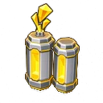

아래 그림은 게임에 들어간 값을 그대로 옮긴 것이다 — 육각 좌표식, 그라디언트, 애니 주기(3.6초)·진폭(1.0↔0.86)까지 같다. 움직임은 정지 이미지로는 판단이 안 돼서 ① 필름스트립(한 주기를 다섯 컷으로 쪼갠 것)과 ② 실제로 움직이는 것을 나란히 뒀다.
1추천 표식 한 주기 — 「지금 자리」에서 안으로 모였다가 돌아온다
가장 모여도 기본 테두리에서 여유를 두고 멈춘다 — 아래 파란 점선이 그 테두리 자리다. 밖으로는 별 간격(52)이 좁아 더 못 키운다. 조각과 뒤 빛은 같은 주기·같은 위상이라 한 덩어리로 숨 쉰다. 한 번 도는 데 3.6초 — 늘 떠 있는 표시라 빠르면 곧 시끄러워진다.
2실제로 움직이는 것 — 별 다섯 상태
왼→오: 못 산다 · 살 수 있다 · 🏅 추천(움직인다) · ✨ 지정됨 · 샀다. 안 산 별 둘(못 산다·살 수 있다)은 테두리가 같다 — 갈래 색 세로 그라디언트를 알파만 낮춘 것. 지정하면 테두리가 산 별의 것으로 바뀐다(「사면 이렇게 된다」). 지정한 별에는 추천 표식을 안 그린다 — 표시가 둘이면 뜻이 흐려진다.
3그 별을 누르면 — 하단 시트 이름 오른쪽에 「추천」
지도 위 표식과 같은 것을 가리킨다. 표식은 지도에서, 배지는 시트에서 같은 말을 한다. 이름 오른쪽이라야 이름 시작 위치가 별마다 안 달라진다. 금색은 포인트·비용의 색이라 「값어치」로 읽힌다.
